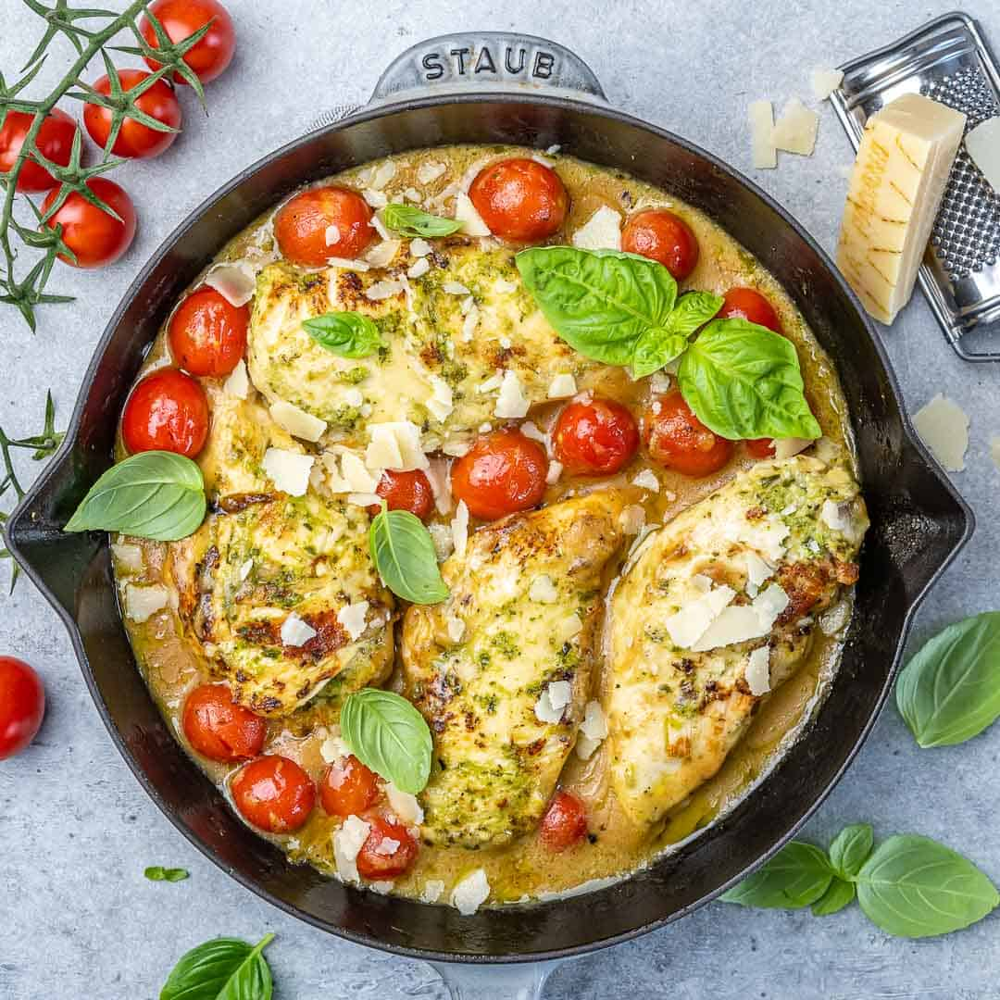

Pesto Chicken

Ingredients
- Chicken
- Garlic powder
- Olive oil and butter
- Garlic
- Chicken broth
- Tomatoes
- Pesto
- Italian seasoning
- Mozzarella
- Basil
How to make Chickn Pesto
- Preheat the oven to 400F. Cut the chicken breasts into two smaller cutlets lengthwise, and season them with garlic powder and salt & pepper. Pan fry until golden brown.
- Transfer chicken to a plate, and add to the skillet the garlic, broth, tomatoes, pesto, and Italian seasoning. Cook until the tomatoes start to lose their firmness and release juice.
- Add the chicken back into the skillet, and sprinkle the mozzarella on top of the chicken breasts. Bake for 5 minutes, and then carefully broil it for a few more.
Garnish with fresh basil if using it, and serve immediately!
Go back!